Inside the Rule Engine
From research landscape to shipped product—designing a rules engine that replaces programmatic jargon and Excel workarounds with plain-English readbacks, revealing logic in clear, discernible chunks so compliance teams can trust what a rule will do as they build it.
tl;dr
Context
- Rules engine: upstream of every trade, governs which orders can execute
- Platform serving 3,300+ institutional firms; misconfigured rules can lead to millions in trade errors
- System held together by tribal knowledge and Excel workarounds
Approach
- Led discovery and a design sprint to find the highest-leverage slice
- Scoped to rule management and rule creation as the most feasible, high-impact workflows
- Pivoted from standalone list manager to in-rule list creation and plain-language logic
Outcome
- 7/7 usability participants responded positively, unusually strong signal
- Plain-language rule preview called out as the biggest confidence booster
- Replaced Ctrl+F / Excel workarounds and set interaction patterns for the broader compliance suite
finding the right problem before designing the right solution
This wasn't a project that arrived as a neat design brief. It started with two questions: inside a sprawling ecosystem of aging compliance tools, where should we intervene first—and how could design actually reduce risk rather than just re-skin old workflows?
I led a structured discovery and sprint process, pulling together existing interviews that had never been acted on, synthesizing research with product and engineering, and facilitating design workshops before a single pixel was drawn. The decision about what to design was as deliberate as the design itself.
The plain-language preview, the guided creation flow, the structured value input — these weren't just solutions to individual problems. They became the interaction patterns the rest of the compliance suite would build on.
Surveying the Compliance Landscape
I surfaced and re-read prior compliance interviews that had stalled out, then brought product, engineering, and business into the same room to synthesize themes. That work aligned us on the rules engine as the highest‑leverage slice of the ecosystem—where a better experience would immediately change how compliance teams find, create, and maintain rules.
What users were working with
A rendered legacy rules table — matching the actual legacy UI — is shown on the live site. Header: Rules. Columns: Rule Id · Rule Name · Active · Investment Professional · Managed Account Advisor · Investor · Super Trader · Detail. Example rows (verbatim):
- U010 — Restricted Symbol Watch List — Active No — REVIEW, If Action =[ S], If Position Source =[ A], If Symbol / CUSIP / SEDOL =[ AAPL, MSFT, AMZN, CAKE, TSLA, META, QQQ, SPY, SPF, AA, BBB, NVDA, … ]
- U011 — Rep Account Number Monitor — Active Yes — REVIEW, If Accepting Rep =[ 123, 456], If Account Number =[ 033000086]
- U012 — Low Dollar Order Cap — Active No — REVIEW, If Account Number =[ 033370983], If Order Value >= [ CAP 70.00]
- U013 — Multi-Account Hold Flag — Active Yes — REVIEW, If Account Number =[ 033000256, 044000123, 044000456, 044000789, 055000111, 055000222, 055000333, … ]
- U014 — Commission Variance Threshold — Active No — REVIEW, If Commission Variance > 2.50 %
- U015 — Rep Code Restriction — Active No — REVIEW, If Accepting Rep =[ B[]]
- U016 — Multi-Branch Activity Review — Active No — REVIEW, If Branch =[ 123, 124, 125, 126, 127, 128, 129, 130, 131, 132, 133, 134, 135, 136, 137, 138, 139, 140, … ]
- U017 — Penny Stock Block — Active Yes — REJECT, If Order Type =[ MKT], If Symbol Price < [ 1.00], If Exchange =[ OTC, PINK, … ]
- U018 — Options Level Enforcement — Active Yes — REVIEW, If Instrument Type =[ OPT], If Options Level < [ 3], If Strategy =[ SPREAD, NAKED, STRADDLE, … ]
- U019 — Concentration Limit - Equity — Active No — REVIEW, If Position Concentration > [ 20.00 %], If Asset Class =[ EQ], If Account Type =[ IRA, ROTH, … ]
- U020 — Short Sale Locate Check — Active Yes — REJECT, If Action =[ SS], If Locate Status =[ NOT_CONFIRMED], If Symbol / CUSIP =[ … ]
- U021 — Day Trade Buying Power — Active Yes — REVIEW, If Day Trade Count >= [ 4], If Account Buying Power < [ ORDER_VALUE], If Period =[ ROLLING_5D]
- U022 — Foreign Issuer Disclosure — Active No — REVIEW, If Issuer Country !=[ US], If Market Cap < [ 500000000], If Action =[ B, S, … ]
- U023 — Margin Call Override Block — Active Yes — REJECT, If Margin Status =[ CALL_OUTSTANDING], If Action =[ B], If Account Number =[ … ]
Link: Meet the legacy system ↗ (/legacy-rules-annotated.html)
Legacy Rules table (code-drawn, no image).Five problem areas emerged
Bringing interviews, screenshots, and support stories together surfaced five patterns I could design against.
Link: Explore synthesis board in FigJam ↗
SynthesisSection (interactive).Rules list lacks searchability
Rules are only findable with Ctrl+F and truncated text; compliance teams keep spreadsheets just to locate the right one.
Rules lived in a dense grid that could only be searched with Ctrl+F—and even that broke once text was truncated—so compliance officers kept parallel spreadsheets just to track down the rule they needed.
What this looked like
"Have to use ctrl+F to find rules and some cutoff logic is unsearchable so I have to keep a separate spreadsheet to simply track down a rule"
Legacy Rules grid (code-drawn, no image).Keyword selection is opaque and error-prone
Over a hundred keywords with no definitions—users pick by trial and error, clicking next to discover what each one does.
Keyword selection was a blind trial-and-error process: over a hundred options with no descriptions, forcing users to select one, click next, and backtrack repeatedly just to understand what each keyword did.
What this looked like
"Only know what a keyword means by trial and error — select it and click next, then go back and search again for another keyword"
Rule Keywords dialog (code-drawn, no image).The system expects expertise it never provides
Free-text inputs and no guidance assume expertise the platform never teaches; new users can take years to build confidence.
Core inputs assumed deep institutional knowledge—a single free‑text field for hundreds of ticker symbols with no structure, preview, or validation—turning everyday rule updates into error‑prone chores.
What this looked like
"One-line box for 600 ticker symbols — impossible to jump to the end of that list"
Rule Details form (code-drawn, no image).Insufficient documentation and audit tracking
Rule rationales and change history live in external spreadsheets; if those fall out of sync, there's no authoritative record inside the platform.
Rule rationales, change history, and scope lived in a separate Excel tracker that had to be updated manually; if the spreadsheet and the system disagreed, there was no obvious source of truth in high‑stakes situations.
What this looked like
"Jumping back and forth loses my place — and if I forget to update the spreadsheet, it's hard to know the single source of truth. In compliance, that gap can mean a costly trading error."
Platform ⇄ Excel tracker (code-drawn, no image).Help content not accessible
The only in-product help is buried in a top-nav link most users have never found—never surfaced at the moment of need.
The only in‑product help lived in a generic help center link buried in the top nav—technically present, practically invisible, and never surfaced at the moment someone was configuring a rule.
What this looked like
"Didn't know that was here, that's cool"
ABC Investing nav (code-drawn, no image).From research insights to → "How Might We" prompts → concept sketches
With five problem areas defined, I brought key partners from product and engineering into a focused design sprint—framing each problem as a "How might we" prompt and sketching concepts across six opportunity areas with constraints and business logic in the room. The sprint produced the concept set behind everything that shipped, and its key decision: anchor the work in plain-language rule logic, starting with the rules list and a guided creation flow.
Link: View Original Sketches in FigJam ↗
Sprint Highlights — Seven Concepts
HMW 01 — Find & understand rules
Real search across names and metadata, with plain-language rule detail right in the list - no more Ctrl+F.
HMW 02 — Keywords, explained
Definitions and accepted values surfaced at the moment of selection - ending the trial-and-error loop.
HMW 03 — Help where it's needed
Contextual guidance inside the create-rule flow - not buried in a help center nobody finds.
HMW 04 — Structured value entry
Bulk upload with validation instead of one comma-separated text box for thousands of values.
IdeationReel (interactive, code-drawn cards).Sprint Highlights — Seven Concepts (cont.)
HMW 04 — List manager
Define a list once, reuse it across rules - the concept an infrastructure constraint deferred (see The Pivot).
HMW 05 — Confidence before go-live
A plain-language preview that builds as the rule is built - the concept users later called out as the standout. Builds as you go: If Account No. is one of… / and Action is Buy / → then REJECTED
HMW 06 — Audit trail, in-platform
Rule change history inside the product - retiring the shadow spreadsheet as the source of truth. Timeline: Modified by K.D. Today 9:41am / Activated by S.R. Mar 2, 2:15pm / Created by K.D. Feb 28, 10:00am
IdeationReel (interactive, code-drawn cards).Deciding Where to Start
With 6 HMW areas and related concepts generated, the team assessed impact vs. effort - keeping in mind business, tech, and other environmental constraints.
Effort vs Impact Matrix — axes: ↓ LOWER IMPACT · HIGHER IMPACT ↑ / ← LOWER EFFORT · HIGHER EFFORT →
High Impact · Low Effort
- HMW 04 — More intuitive form controls — → Phase 2
- HMW 03 — Surface help where it's needed - contextual guidance — → Phase 2
- HMW 01 — Find & manage rules - search and filter on metadata + plain language rule preview — ✓ Phase 1
- HMW 05 — Intuitive rule builder - split panel, plain language preview builds as details are added — → Phase 2
High Impact · High Effort
- HMW 02 — Keyword assistant - view keyword descriptions on selection surface — → Phase 2
- HMW 06 — Documentation & audit trail - change history — → Phase 3
- HMW 04 — List Manager - bulk editing, inheritance, validation — → Deferred
Low Impact · Low Effort
- HMW 01 — Bulk actions — → Deprioritized
- HMW 01 — Custom rule description — → Deprioritized
Low Impact · High Effort
- HMW 04 — Rule Wizard — → Deprioritized
Effort/Impact matrix (code-drawn, no image).The resulting phased approach
✓ Phase 1 — Rules List
Users need to find and understand existing rules before anything else. Real search, filtering, and a plain language rule preview accomplish this. The layout of this page - and getting users familiar with the plain language format - made it easier to build rules in Phase 2, which reused the same pattern.
→ Phase 2 — Rule Creation
Getting new rules into the system cleanly - with guided input, contextual keyword help, and confidence before going live - was the most consequential workflow. It also laid the groundwork for edit rule, which could follow the same pattern with minimal additional mapping.
→ Phase 3 — Edit Rule + Change History
Editing and viewing change history depends on users having a solid mental model of rules first. Sequencing this after creation and list work made the later problem easier to solve.
→ Deferred — List Manager
The most exciting concept from the sprint - and the most complex. Sprint edge-case analysis revealed significant downstream complexity. Deferred, not abandoned.
The Pivot
When infrastructure ruled out the strongest concept
With priorities set, I zoomed in on the fine details that would make or break the experience. The most significant was the input mechanism for keywords and clauses - how compliance teams actually get values into a rule. During the HMW sprint, one of the strongest concepts was a dedicated List Manager - a way to define, store, and reuse named value sets across multiple rules. But a hard infrastructure constraint forced a pivot. To understand why this detail mattered so much, it helps to see what the legacy process actually looked like.
Uploading a securities list to a rule — Step 1
Step 1
Leave rule creation - navigate to a separate import page via main nav.
Rendered "Data Import" screen — Step 1: Type the file name below or use the Browse button to locate the file on your desktop. [Choose File] No file chosen. Step 2: Data Validation Display: (•) All Records ( ) Errors Only. Step 3: Click Submit to initiate Import Process. [Submit]
Excel file shown: "blacklisted securities 2025" — row 1: Securities Upload, AAPL, AMZN, AAA, MSFT, TSLA, FB, NFLX, NVDA, INTC.
Data Import + Excel (code-drawn, no image).Uploading a securities list to a rule — Step 2
Step 2
Back in rule creation - set keyword to "Securities Upload," then match rule name exactly to the CSV filename.
Rendered "Rule Management - Edit Rule" screen: rule 0000001; Rule Name: blacklisted securities 2025; Keyword: Securities Upload; Action: REVIEW ▾; Applies To: * Junior Trader ✓, Advisor, Investor ✓, Senior Trader ✓; buttons: Choose Keywords · Save Rule · Save as New Rule · Delete Rule · Cancel.
Rule Management – Edit Rule (code-drawn, no image).From standalone List Manager to bulk upload within the rule
HMW Concept - Standalone List Manager
Saved lists - reusable across rules: High-risk securities · 42 items · 3 rules; Exempt accounts · 18 items · 1 rule; Licensed reps - Series 7 · 134 items · 2 rules; Restricted entities · 27 items · 4 rules; Emerging market issuers · 61 items · 1 rule. + Create new list. ↑ define once, reuse across many rules
Pivoted Direction - Bulk Upload Within the Rule
within clause builder. Add List of Values modal, tabs Enter Values / Review List. "Add values to your list by uploading a local file and/or pasting directly into the second box below. Once you've entered all values, click next to review and edit the list as needed." Upload File: Drag and drop file here or browse local files. Enter or Paste Values (?): Manually enter or paste values here. Separate multiple values using commas, semicolons, or new lines. [Cancel] [Next →]
List Manager concept, Add List of Values modal (code-drawn, no images).The pivot, as one decisive narrative
The List Manager was the strongest concept to come out of the HMW sprint: define a named value set once - blacklisted securities, licensed reps - and every rule referencing it stays current. But during the sprint I identified a hard constraint: the existing data architecture couldn't store list-level entities separate from rules, and the infrastructure work to support them wasn't resourced for this cycle. I pushed hard to understand exactly where the wall was, and once I confirmed the constraint was real, I stopped designing around it and started designing within it. A rule could still store its own value set - just not as a reusable, named list - so I redirected the design toward making the in-rule input experience dramatically better: structured input with bulk upload via CSV, paste, or manual entry, plus real-time validation. No more comma-separated text box. No more filename-matching ritual. It's not the List Manager, but it solves the most acute version of the problem and lays the foundation for when full list management becomes feasible.
Mapping the End-to-End Workflow
With the direction set, I mapped the full workflow in low fidelity - how screens connect, where users enter and exit, and the overall shape of the experience before sweating any details. These wireframes anchored a cross-functional review with engineering and product, aligning us on feasibility and edge cases before zooming in.
Six-step lofi flow
Rule Management → Keywords → Rule Logic → Order Placed By → Rule Outcome → Review & Confirm
LofiFlow (interactive wireframe strip, code-drawn).The Redesign
With the structure validated in lofi and cross-functional alignment in place, I refined the wireframes into a mid-high fidelity prototype - two interconnected workflows designed as a coherent system:
- Rules list - find, scan, and understand rules with real search and plain-language previews
- Rule creation - a guided stepped flow replacing the blank, expert-only form
- Plain-language logic introduced in the list carries directly into creation - familiarity built intentionally
Explore both end to end in the prototype, or read the breakdown below.
Link: Meet the redesign ↗ (/rule-management-prototype-v1.html)
PrototypeEmbed (interactive prototype link).Rules List
The legacy rules list had one job - display all rules - and did so, but without any ability to navigate, filter, or understand. The redesign turned a static table into a usable decision-making surface - with filtering, persistent rule detail, and plain-language logic all accessible from one view.
Before - Legacy Rules List / After - Redesigned Rule Management
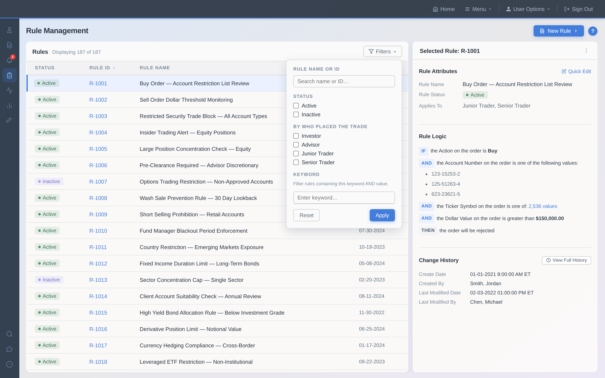
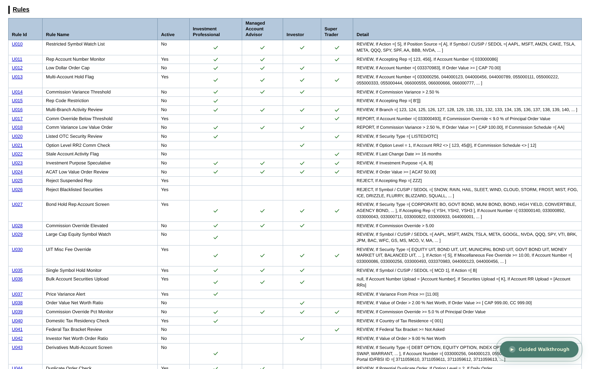
rule-management-v1-screenshot.png, legacy-rules-screenshot.png — BeforeAfterWipe (interactive compare).A usable decision-making surface
01 — Two-panel layout with plain-language rule logic
A rules list alongside a persistent right detail panel - showing rule logic rendered as human-readable sentences, not raw conditional strings. Status, applies-to scope, and a timeline summary are all visible without ever leaving the list. Compliance officers can field trader calls without digging through opaque syntax.
02 — Find the right rule fast - filtering and inline preview
Real search across rule names and metadata, combined with active/inactive status filtering and keyword filtering, replaced the old Ctrl+F workflow. Selecting any rule instantly surfaces its full logic in the detail panel - no navigation required, no losing your place in the list.
03 — Rule details and quick actions, without leaving the list
The detail panel surfaces everything you'd otherwise have to dig for - rule logic, applies-to scope, and modification history - alongside a Quick Edit shortcut and a direct link to full change history. No more navigating into a rule just to check a value or make a small correction.
rule-management-v1-screenshot.png.Rule Creation
The legacy creation experience assumed expert knowledge. The redesign built that knowledge into the flow - replacing a blank form with a guided workflow. Core structural shift: from a single overwhelming page to a stepped flow.
01 — Search, preview, and select clauses
The Add Clauses modal became a three-column layout: searchable clause list on the left, a preview panel in the center showing each clause's name, value type, and examples, and a selected clauses summary on the right. Users can preview a clause before committing - eliminating the trial-and-error loop.
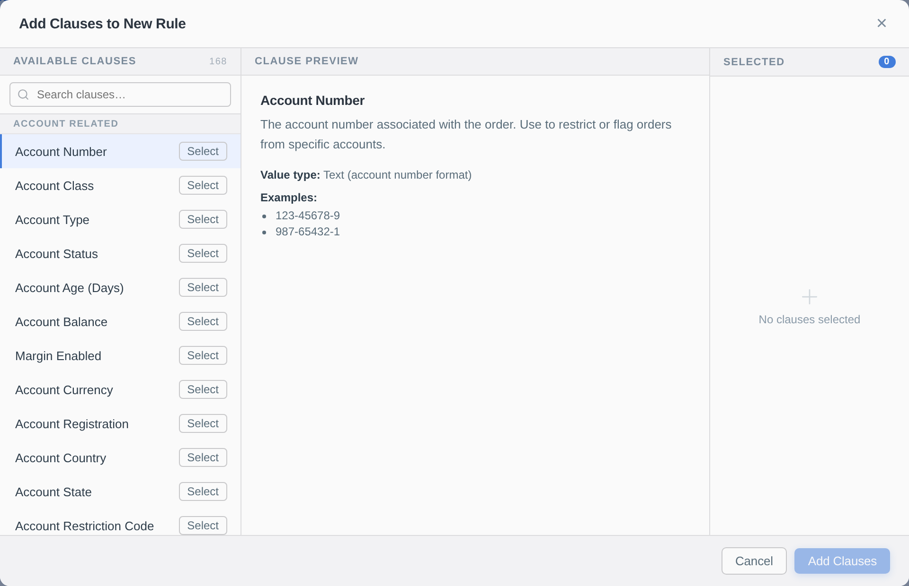

design-vid-b1.mov (still v2-clause-preview-readonly.png), legacy-vid-b1a.mov (still v1-clause-preview.png) — PartBFeatureTabs.Structured input and a live plain-language preview
02 — Structured value input with inline validation
The single free-text box for thousands of comma-separated values was replaced with a two-step flow: upload a CSV or paste values, then review the imported list row by row with inline editing and per-row removal. Users know before saving whether their values are correctly formed.
03 — Live plain-language rule preview throughout
As users add clauses, the Rule Logic panel builds up a plain-English summary in real time - keyword, operator, and values rendered as a readable sentence. By the time they reach Review & Confirm, the full rule is visible in human-readable form, giving confidence before going live.
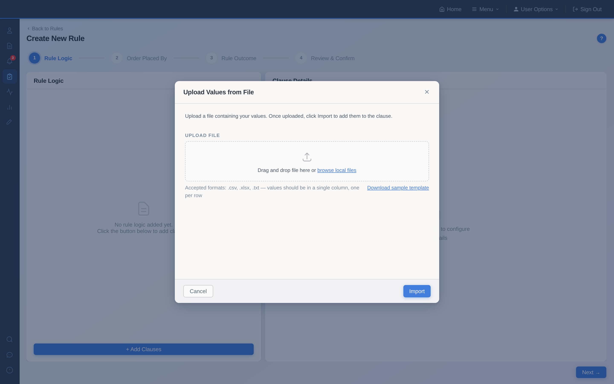
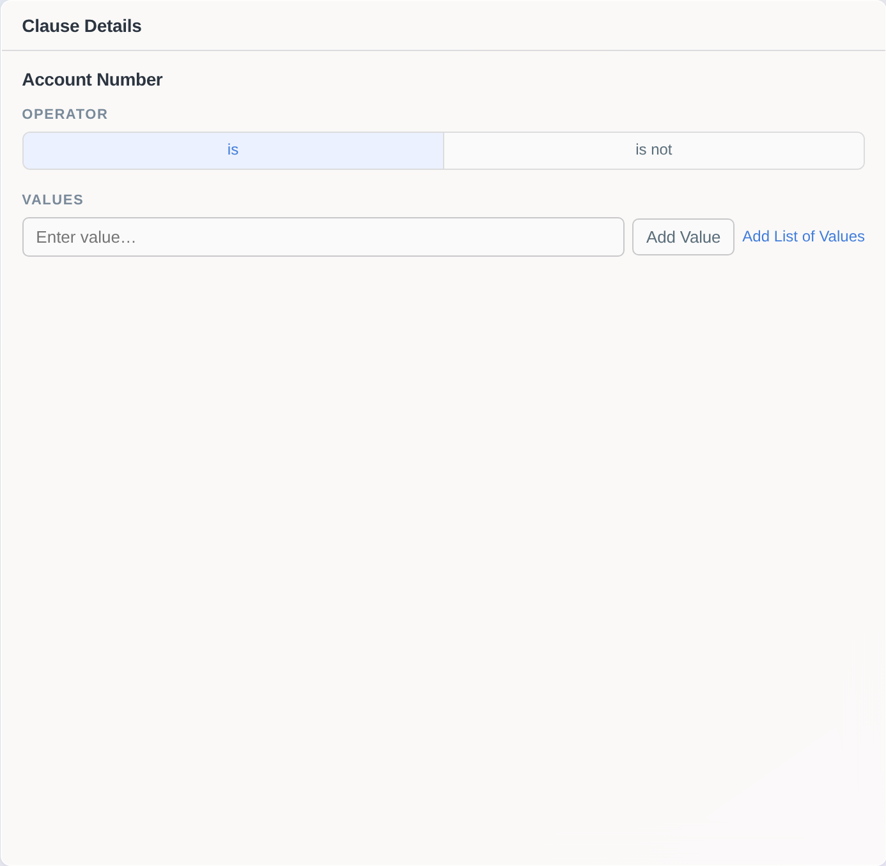
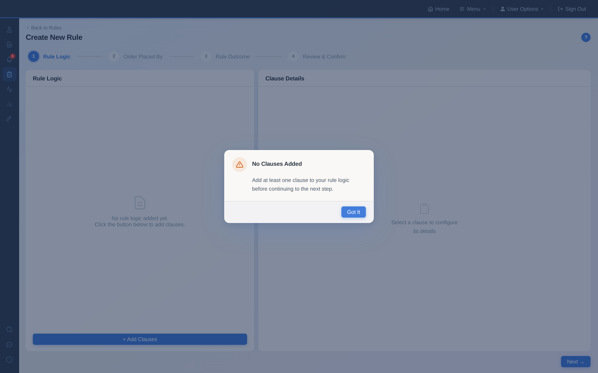
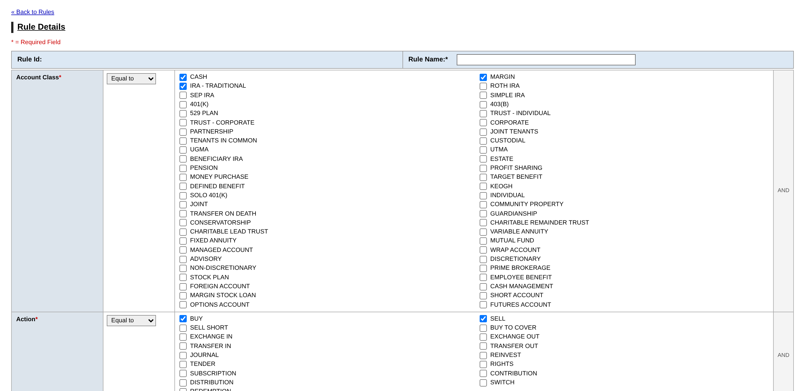
design-vid-b2.mov (still v2-upload-modal.png), legacy-vid-b2.mov (still v1-values-input-cropped.png), design-vid-b3.mov (still v2-rule-logic.png), legacy-rule-creation.png — PartBFeatureTabs.What Changed After Testing
With the mid-high fidelity prototype in hand, I brought it to user testing sessions with compliance officers. Each workflow step was mapped to a specific research question, with areas of highest uncertainty - clause selection, value input, and the add list flow - as the focus. Here's what I heard, and what changed as a result. You can also explore the updated v2 prototype with all post-testing changes applied.
What worked well
- Plain language rule preview that builds throughout the flow was a standout - users specifically called it out
- General workflow described as intuitive, smooth, comfortable
- Add Clause step: users liked the search, additional info, and flexibility of quick add vs. preview first
Iteration 1 of 4
Feedback
Clause preview felt editable - users tried to interact with the form fields in the preview panel. In v2, I removed the form representation entirely and replaced it with a read-only summary, making the distinction between preview and configuration unambiguous.
iter-1v1.mov (still v1-clause-preview.png), iter-1v2.mov (still v2-clause-preview-readonly.png) — IterationCards.Iteration 2 of 4
Feedback
Bulk value entry surface was not intuitive - users were thrown off by the basic text input with "Add Value" and "Add List of Values" options side by side. There was no structure, no validation feedback, and no format guidance for file uploads.
What changed
Replaced the flat input with a structured values grid showing each entry with inline validation status. Added a dedicated "Upload a List" action with format guidance and a sample template.
iter-2v1.mov (still v1-values-input-cropped.png), iter-2v2.mov (still v2-upload-modal.png) — IterationCards.Iteration 3 of 4
Feedback
Users wondered what would happen if an invalid value was added - a validation gap I hadn't fully considered. This led to the editable review grid with per-row validation icons and counts, so users can catch and fix errors before saving.
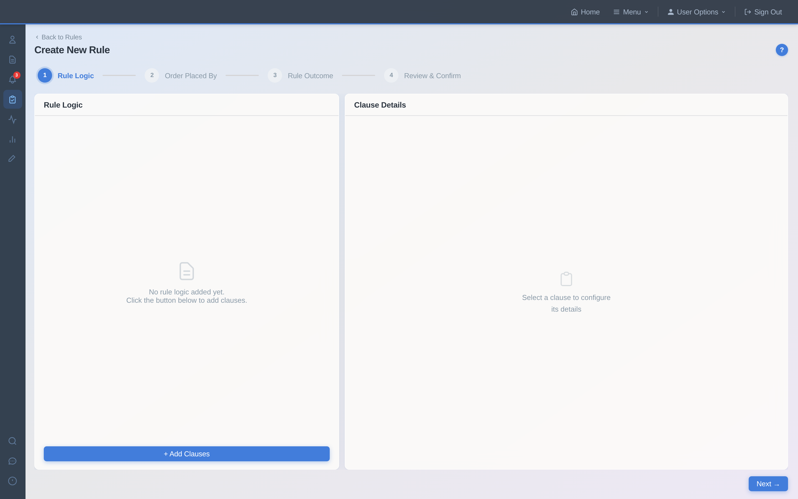
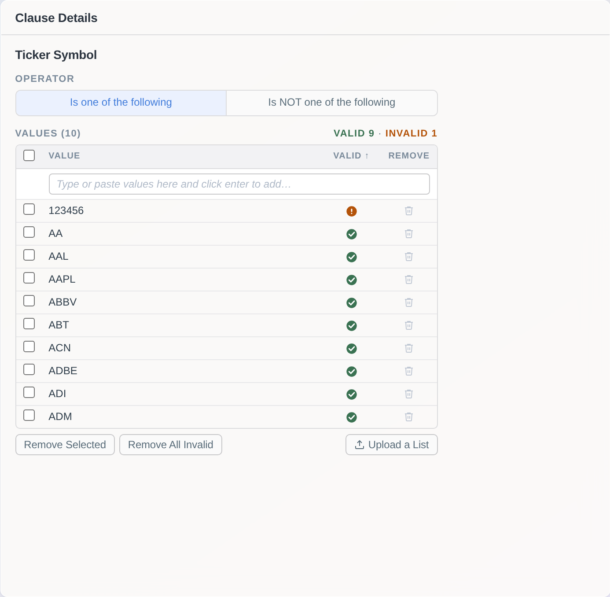
iter-3v1.mov (still v1-clause-detail.png), iter-3v2.mov (still v2-validation-grid.png) — IterationCards.Iteration 4 of 4
Feedback
Order Placed By step lacked the contextual definitions users loved on Order Outcome - an inconsistency they noticed immediately. V2 added role descriptions to match the pattern established elsewhere in the flow.
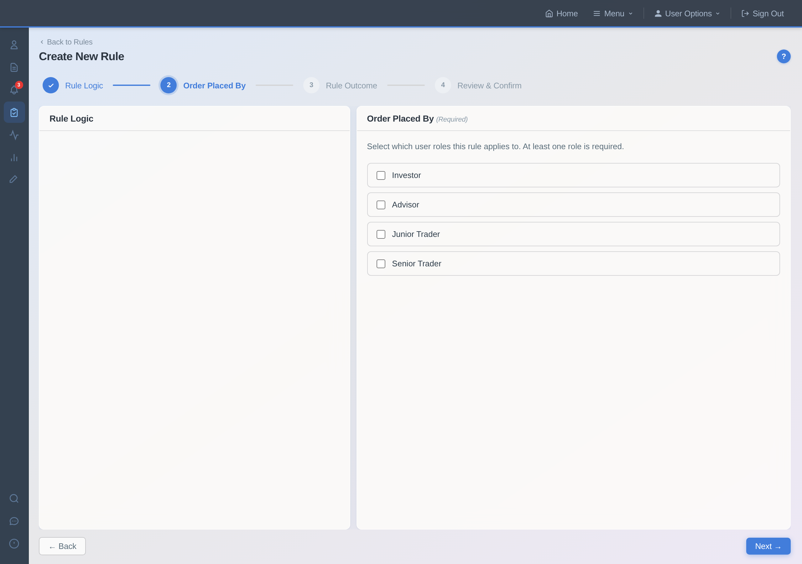
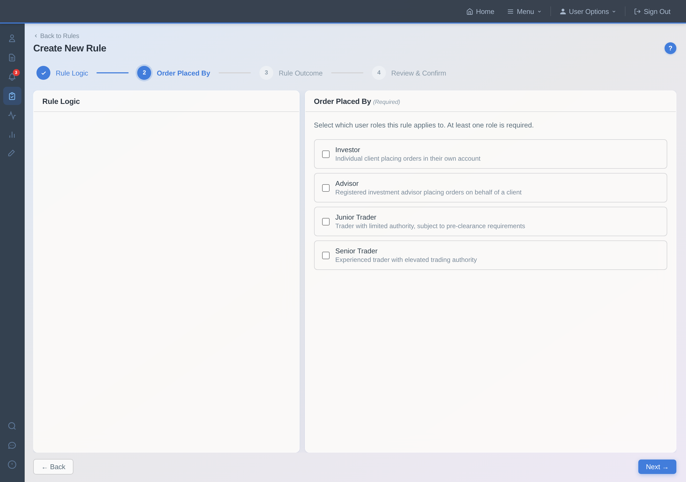
v1-opb-fullpage.png, v2-opb-fullpage.png — IterationCards.From shipped to what's next
Both the rule management redesign and the rule creation workflow were user tested, iterated, and shipped. The work established patterns and groundwork for the next phase - edit rule, change history, and eventually the full List Manager.
Guided creation over blank forms
A guided workflow with clause preview replaced a single overwhelming page - reducing expert knowledge required to create a rule correctly.
Findable, scannable rules list
Real search, active/inactive filtering, keyword filtering, and plain-English rule preview replaced Ctrl+F and Excel workarounds.
Confidence before going live
Live rule preview, inline value validation, and structured clause details give users assurance their rule will do what they intended.
What's next - Phase 2
- Edit Rule flow - building on the creation patterns established in Phase 1
- Rule Change History - surfacing the audit trail users currently track in Excel
- List Manager - the most complex and most requested capability, now better scoped
What I carried forward
Measuring what shipped
The usability signal was unusually strong - 7 of 7 participants responded positively, which for this user group was genuinely surprising. But usability testing measures confidence before launch, not outcomes after. I still don't know if error rates dropped, if support tickets decreased, or if time-to-create-a-rule improved. That's the real gap: I didn't establish success metrics before launch, and it's something I now build into every project from the start - define the measurement plan during discovery, not after ship.
Starting simple was the better strategy
The List Manager was the concept we were most attached to—a powerful way to define lists once and reuse them across rules. But when we tested the simpler "add values within the rule" flow, compliance users were more excited by how much it reduced fragility with almost no extra learning curve. It made me more skeptical of big, system‑heavy ideas when a lighter, MVP solution solves the sharpest pain: start with the smallest thing that reduces risk and complexity, then earn your way to more ambitious patterns only if users actually need them.
Designing patterns, not just screens
The plain-language rule preview, the stepped creation flow, the structured value input - these weren't just solutions to individual problems. They became the interaction patterns that the rest of the compliance suite would build on. But I didn't make that explicit enough during the project. I should have documented the emerging pattern language more deliberately - creating shared artifacts that the broader team could reference as the product expanded. I've learned that at a certain level of complexity, the system you leave behind matters as much as the feature you ship.
AffinityMap synthesis board — un-rendered source data
AffinityMap component and its fullClusters array exist in src/pages/RulesCaseStudy.jsx (approx. lines 305–383) but are never mounted in the render tree — the synthesis section that actually renders on /case-study/rules is <SynthesisSection/> (Slides 6–11). This sticky text therefore does not appear on the live page; it is preserved verbatim below for completeness and deliberately kept out of the 34 numbered mirror slides. On the live page the equivalent is the "Explore synthesis board in FigJam ↗" link. 6 clusters, 29 sticky notes.Cluster 01 — Rules list lacks searchability
- inactive rules take up space - nice to filter off ones you don't need
- finding rule use ctrl + F - use separate Excel to track changes
- search on rules list could be better - do ctrl+F for rules with a criteria
- smart search for keywords - on metadata like a book catalog
Cluster 02 — Keyword selection is opaque and error-prone
- would be helpful to have keyword definition info where you are selecting it
- only know what keyword means by trial and error - select and click next
- cumbersome to figure out what keywords apply - call NFS, trial and error
- today email CSM to ask what a keyword does if not familiar with it
Cluster 03 — Difficult to build a rule without tribal knowledge
- linear box for long entries - not easy to enter or jump to end of 60 entries
- hard to know where to find help - not intuitive to click the question mark
- formatting long list of symbols to put in the system
- took a couple years to really understand who this would impact
Cluster 04 — Insufficient documentation and audit tracking
- rule creation free form - put the list into Excel and concatenate
- list of rules - have to go into each rule, copy to Excel to search
- track in SharePoint - reason for creating the rule, rationale when trader calls
- rules change log would be helpful - in platform, not a separate Excel
- hard to see what changed - which column to look at
- jumping back and forth - lose my place, creates room for error
- free form personal notes - tracking why rule was created, changed
- ask for a reason when someone makes a change - optional or required
Cluster 05 — Help content not accessible
- never seen help content - too far away
- apply to managed acct advisor and super trader - not super descriptive
- doesn't know help content exists - didn't know that was here, that's cool
- hover to see keyword meaning would be too much - needs a dedicated button
Cluster 06 — Triggered rules lack visibility
- no plain-language explanation of why a rule blocked a trade - just the rule name
- rule conditions may have changed since it triggered - no way to know without digging
- no paper trail connecting a triggered rule to what the conditions were at that moment
- compliance user has to manually reconstruct what happened when a trader calls
- rule name alone is not enough context - need to see what criteria matched
AffinityMap / fullClusters (un-rendered source; verbatim sticky text above).